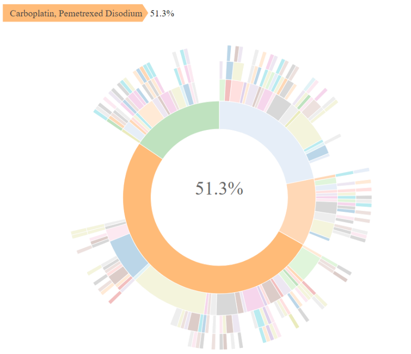

-
-

The American Association for Cancer Research Project Genomics Evidence Neoplasia Information Exchange Biopharma Collaborative (GENIE BPC) is an effort to aggregate comprehensive clinical data linked to genomic sequencing data to create a pan-cancer, publicly available data repository. These data detail clinical characteristics and drug treatment regimen information, along with high-throughput sequencing data and clinical outcomes, for cancer patients across international institutions. The GENIE BPC data repository forms a unique observational database of comprehensive clinical annotation with molecularly characterized tumors that can be used to advance precision medicine research in oncology. Linking multiple clinical and genomic datasets that vary in structure introduces an inherent complexity for data users. Therefore, use of the GENIE BPC data requires a rigorous process for preparing and merging the data to build analytic models. The {genieBPC} package is a user-friendly data processing pipeline to streamline the process for developing analytic cohorts that are ready for clinico-genomic analyses.
Overview
Data import:
pull_data_synapse()imports GENIE BPC data from Synapse into the R environment-
Data processing
-
create_analytic_cohort()selects an analytic cohort based on cancer diagnosis information and/or cancer-directed drug regimen information -
select_unique_ngs()selects a unique next generation sequencing (NGS) test corresponding to the selected diagnoses
-
Data visualization:
drug_regimen_sunburst()creates a sunburst figure of drug regimen information corresponding to the selected diagnoses in the order that the regimens were administered
Installation
You can install {genieBPC} with the following code:
remotes::install_github("GENIE-BPC/genieBPC")Example
The following example creates an analytic cohort of patients diagnosed with Stage IV adenocarcinoma NSCLC first treated with Carboplatin or Cisplatin and Pemetrexed, with and without Bevacizumab,
Pull data for NSCLC version 2.1-consortium:
nsclc_cohort <- pull_data_synapse(cohort = "NSCLC", version = "2.1")Select stage IV adenocarcinoma NSCLC diagnoses that were treated with Carboplatin/Pemetrexed or Cisplatin/Pemetrexed with or without Bevacizumab as the first regimen following diagnosis:
nsclc_stg_iv_adeno <- create_analytic_cohort(
cohort = "NSCLC",
data_synapse = nsclc_cohort,
stage_dx = "Stage IV",
histology = "Adenocarcinoma",
regimen_drugs = c("Carboplatin, Pemetrexed Disodium",
"Cisplatin, Pemetrexed Disodium",
"Bevacizumab, Carboplatin, Pemetrexed Disodium",
"Bevacizumab, Cisplatin, Pemetrexed Disodium"),
regimen_type = "Exact",
regimen_order = 1,
regimen_order_type = "within cancer",
return_summary = FALSE
)Select one unique metastatic lung adenocarcinoma genomic sample per patient in the analytic cohort returned above:
nsclc_stg_iv_adeno_unique_sample <- select_unique_ngs(
data_cohort = nsclc_stg_iv_adeno$cohort_ngs,
oncotree_code = "LUAD",
sample_type = "Metastasis"
)Create a visualization of the treatment patterns for the first 4 regimens received by patients diagnosed with stage IV adenocarcinoma NSCLC that were treated with Carboplatin/Pemetrexed or Cisplatin/Pemetrexed with or without Bevacizumab as the first regimen following diagnosis:
sunplot <- drug_regimen_sunburst(data_synapse = nsclc_cohort,
data_cohort = nsclc_stg_iv_adeno,
max_n_regimens = 4)Example of a sunburst plot showing 4 lines of treatment, Highlighting First Treatment Regimen:

Obtaining Access to GENIE BPC Data
Access to the GENIE BPC data release folders on Synapse is required in order to use this function. To obtain access:
Register for a Synapse account
Use this link to access the GENIE BPC team list and request to join the team. Please include your full name and affiliation in the message before sending out the request.
Once the request is accepted, you may access the data in the GENIE Biopharma collaborative projects.
Note: Please allow up to a week to review and grant access.
Analytic Data Guides
Documentation corresponding to the clinical data files can be found on Synapse in the Analytic Data Guides.
Data follow a staggered release schedule and are available to pharma partners and institutions that are a part of the Project GENIE consortium prior to being publicly available.
Consortium Releases:
- NSCLC V1.1-consortium Analytic Data Guide
- NSCLC V2.1-consortium Analytic Data Guide
- CRC V1.1-consortium Analytic Data Guide
- CRC V1.2-consortium Analytic Data Guide
- BrCa V1.1-consortium Analytic Data Guide
Public Releases: - NSCLC V2.0-public Analytic Data Guide (To be released March 2022)